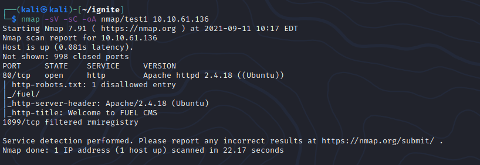
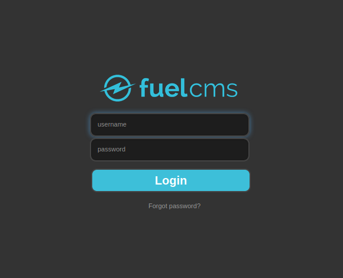

██╗ ██████╗ ███╗ ██╗██╗████████╗███████╗ ██████╗████████╗███████╗
██║██╔════╝ ████╗ ██║██║╚══██╔══╝██╔════╝ ██╔════╝╚══██╔══╝██╔════╝
██║██║ ███╗██╔██╗ ██║██║ ██║ █████╗ ██║ ██║ █████╗
██║██║ ██║██║╚██╗██║██║ ██║ ██╔══╝ ██║ ██║ ██╔══╝
██║╚██████╔╝██║ ╚████║██║ ██║ ███████╗ ╚██████╗ ██║ ██║
╚═╝ ╚═════╝ ╚═╝ ╚═══╝╚═╝ ╚═╝ ╚══════╝ ╚═════╝ ╚═╝ ╚═╝
Hello and welcome to my first blog. Today we're tackling the TryHackMe Ignite CTF.It's a easy-rated ctf and
has been created 777 days ago.
Starting off with a nmap scan we can see that port 80 is open and port 1099 is filtered.Looking into the robots.txt
file we can see that a directory by the name of "/fuel/" exists.

Heading into that directory we can see a login portal. Trying default credentials gives us a successful login!
VALID CREDENTIALS: admin:admin

Poking around the admin dashboard we can see the upload tab, heading in there and trying to upload a php
shell does not work. Trying to bypass this using extensions such as .php5, .phtml , etc. doesn't work either!
If nothing works we can always try and find an exploit for the Fuel CMS version.
Back to menu